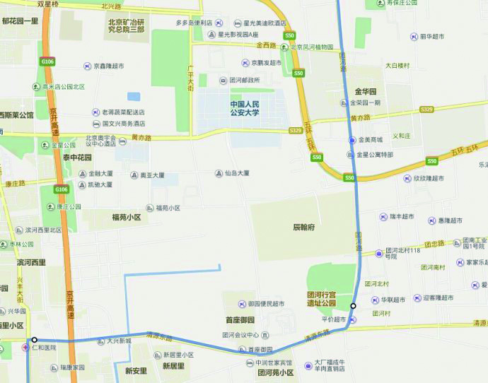

我要住宾馆(2)
这个中秋节小假期，胡有理回内蒙老家去看望受伤的舅舅了，只剩下我和大豆包了。
几天来，大豆包一直不同意在这个小假期继续“我要住宾馆”活动，她想去和她的表妹一起去密云农家院，或者和同班同学小杨一起在家做各种美味的蛋糕饼干（大豆包最近迷上了烘培，做了几次饼干和蛋糕）。
代价！当付出足够多的代价后，我和大豆包终于达成了一致。
达成如下一致意见：
—— 周日（9 月 7 日）上午，她和同学一起做蛋糕，11:30 结束，然后去走路。
—— 要大吃一顿必胜客。
—— 宾馆一定要有早餐。
7 日上午，大豆包和同学小杨从 9 点多开始忙碌，做糕点。
做了两种糕点，最后，平分了劳动成果：希腊可球、七分蛋糕。已经是将近 11:30 了，赶紧招呼两位小同学，立刻走出家门。留下了一堆待清洗的盘碗，让胡有理来打扫残局吧，她晚上 19 点多从内蒙回到北京。
两个小同学不愿意分手，同学小杨极力邀请大豆包去她家里吃午饭，大豆包欣然接受，被我强硬阻止，这要是吃起来，估计今天的所有计划都要泡汤了。
12:00，这次的“我要住宾馆”活动，经过重重阻碍，最终成行。这次是第二次活动，第一次失败了，没有住上宾馆。
在地铁上，大豆包希望在 14 点前吃上必胜客，于是要求多坐两站地铁，把出发的起点和终点调近一些。她问我在哪个地铁站下车，我说在马家堡站下车，她便强调要在公益西桥站下车，我只是稍稍坚持了一下就同意了，因为计划的起点本来就定在了公益西桥站（哈哈，第二天当我得意地和胡有理说起这一段时，被她听到，气得直跳脚）。
到了 13:00，知道短时间内吃必胜客无望的大豆包和我在公益西桥出口吃快餐。
13:30 从公益西桥地铁站出发，开始徒步，今天的目的地是大兴的如家快捷酒店，因为那里有早餐，并且紧挨着必胜客。时间还是很紧的，路程大约是 16 公里。
本来应该在上午就出发，这样时间充裕，徒步的距离也能稍远一些。
14:05 走到了槐房西路和南苑西路交界处，约 3.5 公里。今天的空气质量很差，戴了一会口罩，大豆包就不戴了。
15:30 走到了寿宝庄公交车站，北京国际露营公园附近，走了 8.2 公里。腿有点酸，屁股有点酸，整体状态还都不错。从南苑西路开始，到团河路这边，路况不好，窄，人车混行，不太适合步行。
17:20 走了约 13 公里左右，到了首座御园，大豆包要坐公交车或者出租车，在我的鼓励下，并且反复地提醒酒店的早餐和必胜客的美味，于是又继续坚持。下图为大豆包在等公交车。
被说服后，大豆包行走在路上。
17:52 到了京开高速的十字路口，快到目的地了。终于坚持了下来，哎，如果没有必胜客的话，如果没有酒店早餐的话，那肯定是又半途而废了。
大豆包要休息一会儿。
18:06 大豆包看到了一个很像必胜客的建筑，飞快地跑了过去，结果是阳阳快餐，看来她还有很大的精力。
18:25 到了酒店，胜利到达目的地。在地图上测了一下，从公益西桥地铁站，到酒店，共步行 17.1 公里。在路上，我一直跟大豆包说大概 9 公里。
入住宾馆后，放下背包，大豆包就迫不及待地冲向了必胜客。
大兴的这家必胜客，给的量很少，比在长安商场的那家差了很多。大豆包除了吃必胜客，说她还喜欢在宾馆看电视。
9 月 8 日一早，9:25 吃过早饭，开始步行返回。大豆包还恋恋不舍，想一直住在宾馆里。
今天的空气质量很好，就是太阳有点晒。经过一夜的休息，精神抖擞，精力充沛。返程的路线是大兴直接向北，到达新发地后，乘车，预计 11 公里步行路程。
刚走没几步，大豆包买了份肯德基的套餐，说是中午路上饿了再吃。结果没过 30 分钟，吃完了。
走了大约 3.5 公里，看到了一个华联生活超市，大豆包说教师节想买个礼物，正好我也要买个防晒霜。 逛了几圈，我买了防晒霜，大豆包买了个柠檬杯。走出超市的时候已经快 11 点钟了。结果大豆包说老师强调了，教师节不能给老师带礼物，这个杯子是她自己要用的，哎，这个小孩，水杯都好几个了，还不知足。
11:20 休息 10 分钟。
很晒，刚涂的防晒霜，还没有涂抹均匀。
13:00 左右，在田老师红烧肉吃了午餐。已经步行了 11 公里。今天走的路有很宽的人行道，很适合步行。
吃罢午饭，在新发地买了几斤柠檬（14 元 / 斤），大豆包又到处找她想要的料理棒（一种榨汁的用具）。
14:30 到了新发地公交车站，准备坐车回家。
这次的“我要住宾馆”活动非常圆满，在网上测了一下，今天步行的距离是 14.5 公里。
两天下来总共步行了 17.1 + 14.5 = 31.6 公里。
题外话：
—— 总结：这次的活动，运动量比较适中，我和大豆包都没有感到很疲乏。
—— 大豆包觉得这次的“住宾馆活动”不是很完美，宾馆早餐不是自助的，路上碰到好多喜欢的东西也没有买，料理棒也没有买到。